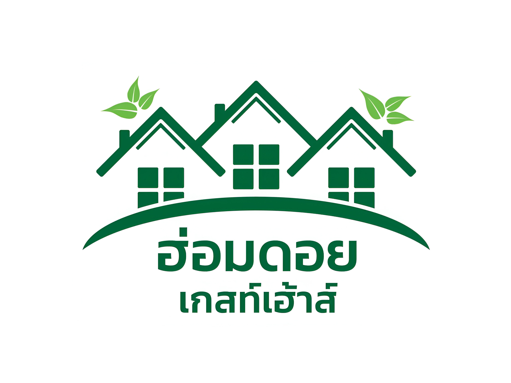

About Us
Contact Us
Homdoi guesthouse
ฮ่อมดอยเกสท์เฮ้าส์
ที่พัก 24 ชั่วโมง แอร์ ไวไฟ และความอบอุ่นจากเรา
Mountain Comfort | AC, WiFi, Warmth & More
499 ฿
700 ฿
1200 ฿
BOOK NOW
About Us
In the heart of Northern Thailand, lies your perfect escape – a guest house that promises not just a stay, but an experience.
Welcome to Bhan Tha Sala, a hidden gem nestled in the serene embrace of Samoeng Tai, just a short drive away from the bustling city of Chiang Mai.